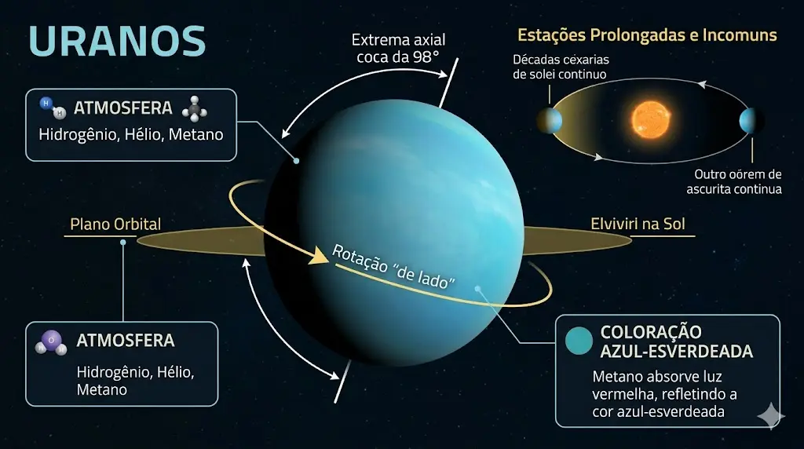
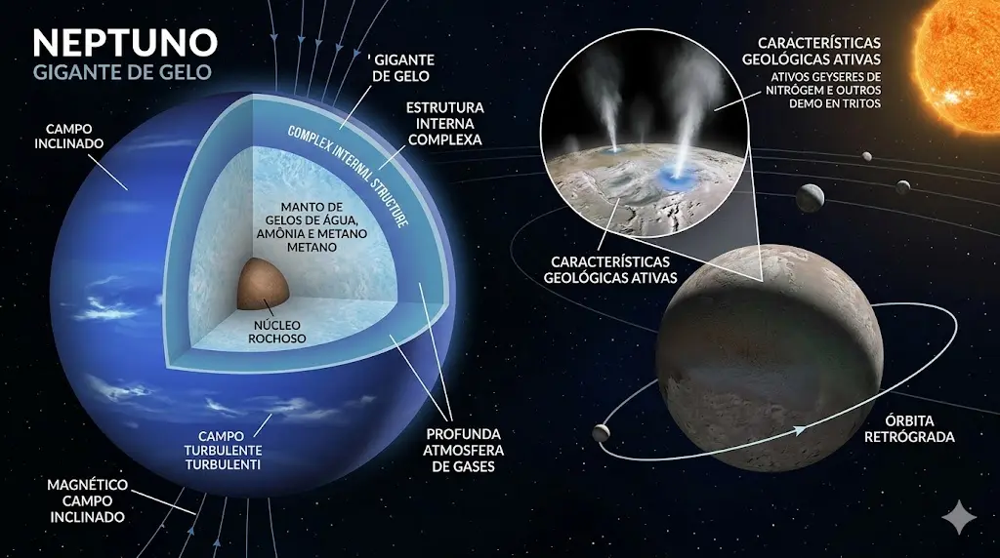

🔵 Netuno: O Gigante dos Ventos
Netuno é o planeta mais distante do Sol e apresenta uma atmosfera extremamente ativa. Seus ventos são os mais rápidos do sistema solar, podendo ultrapassar 2.000 km/h.
Mesmo recebendo pouca energia solar, o planeta mantém uma dinâmica intensa, indicando fontes internas de calor.
Energia além da distância
A atividade atmosférica de Netuno desafia expectativas, mostrando que a distância do Sol não determina completamente o comportamento de um planeta.

🌊 Estrutura e Movimento
Netuno é um gigante de gelo, composto por uma mistura de gases e materiais voláteis. Sua estrutura interna é complexa e ainda pouco compreendida.
O planeta possui várias luas, sendo Tritão a mais importante, com características geológicas ativas.
Um sistema em constante atividade
Mesmo distante, Netuno demonstra que o sistema solar ainda guarda regiões dinâmicas e pouco exploradas.
